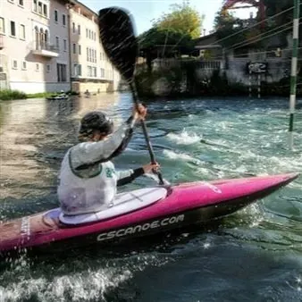

da sab 3 ott a dom 4 ott
45° Trofeo Internazionale Città di Sacile - Canoa Kayak Slalom
Competizione di canoa slalom valevole per l'assegnazione del 45° Trofeo Internazionale Città di Sacile e per l'assegnazione del titolo di Società Sportiva Campione d'Italia.
 Indicazioni
Indicazioni
- Costi e prenotazioni
- Costo non indicato · Prenotazione non indicata
- Programma
- Programma da verificare. Apri la fonte ufficiale per orari e possibili aggiornamenti.
- In caso di maltempo
- Nessuna indicazione specifica pubblicata.
- Note
- Acquisito automaticamente dalla fonte.
L’EVENTO
Descrizione completa
Weekend di competizioni kayak e canoa sul fiume Livenza:
Sabato 3 ottobre:
10.30 - 12.30: Campionato Italiano discesa sprint Paracanoa
15.00 - 18.30: 45° Trofeo Slalom: Senior, Junior e Paracanoa
Domenica 4 ottobre:
09.30 - 16.30: 45° Trofeo Slalom: Ragazzi, Allievi, Cadetti, Master
12.00 - 14.30: Campionato Italiano Slalom Paracanoa
Premiazioni a seguire
La competizione si svolge lungo il tratto di Fiume Livenza che attraversa il centro di Sacile.
Il percorso sarà allestito in prossimità del Ponte della Vittoria, fino ad arrivare alle rapide dietro il Duomo di S.Nicolò.
IL PROGRAMMA
Programma e orari
Appuntamenti raccolti dalle fonti elencate. Dove manca un orario, non è ancora disponibile in questa scheda.
Programma pubblicato
- 10.30 - 12.30: Campionato Italiano discesa sprint Paracanoa
- 15.00 - 18.30: 45° Trofeo Slalom: Senior, Junior e Paracanoa
- 09.30 - 16.30: 45° Trofeo Slalom: Ragazzi, Allievi, Cadetti, Master
- 12.00 - 14.30: Campionato Italiano Slalom Paracanoa
INFORMAZIONI UTILI
Prima di partire
- Controllare la fonte prima di partire.
ORGANIZZAZIONE